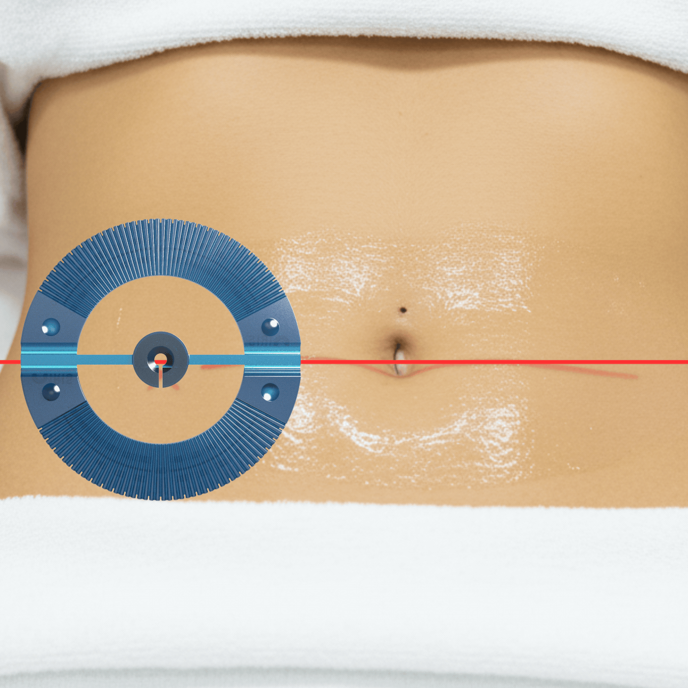
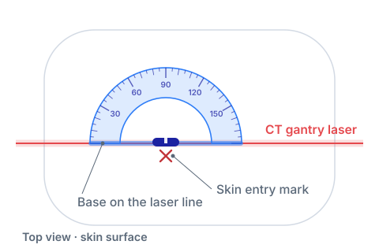
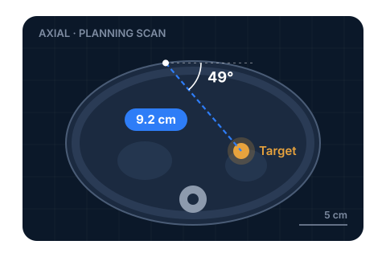
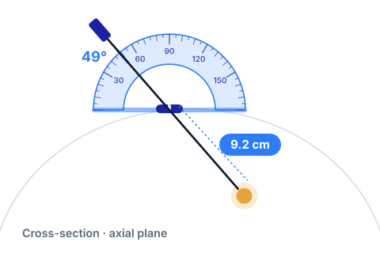

Every check scan adds dose
Each confirmation scan adds radiation exposure for the patient and for the clinicians at the table.
IRIS is a single-use, skin-mounted needle guide that turns the angle you plan on CT into a physical reference at the skin. Improve targeting, cut confirmation scans, and shorten procedures, with no new equipment and no change to your workflow.

Illustrative rendering of IRIS in use.
The problem
Most CT-guided needle placement still depends on the operator carrying an angle from the screen to the patient by eye, then scanning to check, adjusting, and scanning again.
CT-guided biopsies performed in the U.S. every year, plus aspirations, drain placements, ablations, and injections.
Each confirmation scan adds radiation exposure for the patient and for the clinicians at the table.
Repositioning and rescanning extend procedure and sedation time, and limit how many patients a scanner can serve each day.
A few degrees off at the skin becomes millimeters off at the target, often next to structures you have to avoid. Complications are costly for everyone.
Preclinical results
In head-to-head testing against standard technique, IRIS shortened needle alignment and cut the radiation needed to confirm placement.
A calibrated angle reference at the skin means less trial and error between planning and placement.
Getting the angle right sooner means fewer confirmation scans for patients and the care team.
1. IRIS Biopsy internal preclinical study, 2025, compared with standard technique. These are preclinical results; clinical performance has not been established.
How it works
IRIS works with the planning scan you already take. Measure the angle, match it on the device, and advance with confidence.

Step 01
Place IRIS over the marked entry site with its base along the CT gantry laser, so the guide sits in the same plane as your planning slice.

Step 02
On the planning scan, measure the angle of approach and the distance from skin to lesion. These are the same measurements you take today.

Step 03
Set the needle against the matching mark on the IRIS scale and advance to the measured depth, with fewer adjustments and fewer check scans.
Who benefits
IRIS is a simple device with an outsized effect. Here's what it means for each person who touches a CT-guided procedure.
Why IRIS
Freehand technique costs nothing up front but depends on experience. Navigation and robotic systems add precision at a significant price. IRIS sits in between.
| Attribute | Freehand | Navigation & robotics | |
|---|---|---|---|
| Capital equipment | None | Significant purchase | None |
| Setup | None | Dedicated setup and registration | Place on skin and align to laser |
| Angle reference | Visual estimate | Software-guided | Calibrated physical scale |
| Confirmation scans | Frequent | Reduced | Reduced: 53% less radiation in testing1 |
| Learning curve | Experience-dependent | Vendor training program | Intuitive, reads like a protractor |
| Footprint in the suite | None | Console or cart | Fits in a procedure kit |
Introduction
Team
Founder & CEO
Assistant Professor of Neuroradiology at Vanderbilt University and an interventional radiologist with over a decade of CT-guided procedure experience. Dann trained at Johns Hopkins, Tufts, Lahey, and Stanford and is passionate about simplifying biopsy workflows to improve patient outcomes.
Co-Founder & COO
Co-Founder and COO of IRIS and Entrepreneur-in-Residence at Vanderbilt University Medical Center. Jon was previously CMO at Spacious (acquired by WeWork) and Marketing Manager at Google Cloud, with a background spanning healthcare, venture capital, and SaaS commercialization.
Early access
We're placing a limited number of non-clinical IRIS units with interventional radiology teams ahead of our clinical pilot. Get hands-on, tell us what you think, and help shape the device.
Evaluation units are for demonstration only and are not for use on patients.
Prefer email? Reach us at info@irisbiopsy.com
We'll follow up within two business days.
We've received your request and will be in touch within two business days to coordinate your evaluation unit.